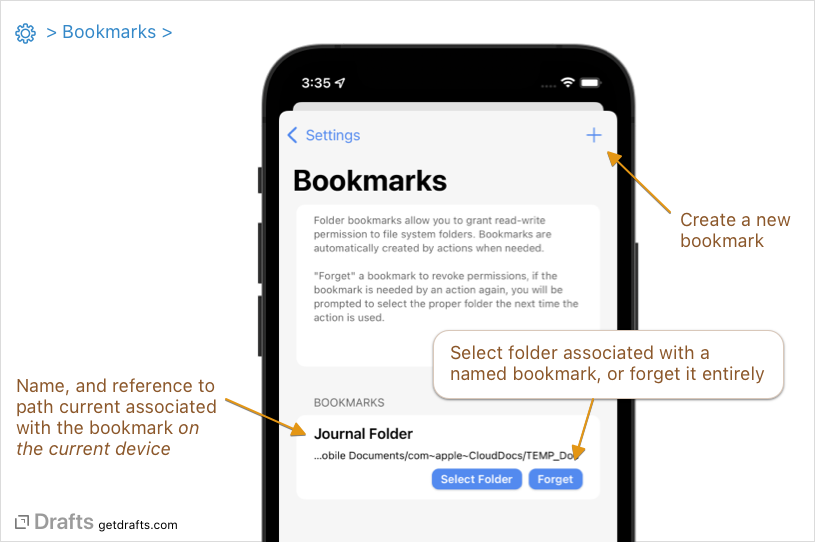
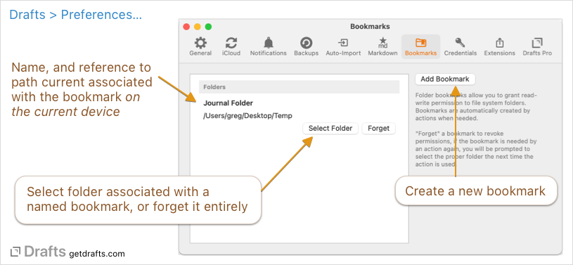

Bookmarks
A bookmark is a reference to a folder in the file system. Bookmarks allow you to grant permissions to work with files in folders that Drafts would not otherwise be able to access due to App Sandboxing security.
Table of Contents
- About Bookmarks
- Creating Bookmarks
- Bookmarks and Devices
- Using Bookmarks
- Changing and Forgetting Bookmarks
- Bookmark Limitations
About Bookmarks
Apple applies security to apps via a mechanism known as the App Sandbox. Apps running in a sandbox have limited access to resources and can only read and write files in specific, designated folders.
The App Sandbox is great for security, but sometimes you would like to allow Drafts to access other folders in the file system, mainly to export files to specific locations to better integrate with other apps and their content.
Bookmarks allow you to grant permissions to folders outside Drafts’ sandbox so that actions can work with files in those alternate destinations using the “File” action step and scripting.
In practice, let’s say you have a “Journal” folder at the root level of your iCloud Drive. Drafts cannot access this folder directly due to sandbox restrictions, but you would like to append to journal files in this folder from Drafts. Bookmarks, combined with the File action step, would allow you to create actions that target this folder. See below for setup details.
Creating Bookmarks
 
Bookmarks can be created in Drafts settings, but it is not necessary to create a bookmark before using it, as bookmarks can be created when needed by an action. A unique name references each bookmark. Any actions (File action steps, or scripts) set up to use the same bookmark name will share a bookmark.
When an action using a named bookmark is run, if a bookmark by that name does not already exist, it will be created, and the user is prompted to select a folder to associate with that bookmark.
Bookmarks and Devices
Due to how the operating system (iOS or macOS) grants permissions to folders outside the App Sandbox, Drafts cannot fully sync bookmarks across devices. The first time any named bookmark is used on each device, a prompt will appear to select a folder to associate with that bookmark. If you wish to use the bookmark across devices, you must choose the same target folder to associate with the bookmark.
Note that for the same reasons, bookmarks cannot be restored. After installing Drafts on a new device, or re-installing, you will have to re-select the proper bookmark folders to associate with your actions.
Using Bookmarks
Bookmarks can be used in actions using the File action step, or using the FileManager script object. Details:
Bookmarks and the File Action Step
The File action step can be used to save content from Drafts to files. File action steps can be configured to use a Bookmark by selecting the “Bookmark” destination, and assigning a bookmark name.
Then the action is run, if a bookmark by the assigned name already exists, it will be used as the root directory for the File action, and the actions path and file name settings will be relative to the folder assigned to the bookmark. If the bookmark does not yet exist for the current device, a prompt will appear to allow you to select the folder to associate with that bookmark name.
Multiple File action steps in different actions using the same bookmark name will share the same bookmark and its destination folder.
To get started, install the below action, preconfigured to write to a file in a bookmark named “Test”:
Scripting with FileManager
The FileManager script object also supports being initialized with a Bookmark object. Sample code and supported methods can be found at the scripting reference, but suffice it to know that all FileManager functions to work with files and folders are available for use with bookmarked folders.
Changing and Forgetting Bookmarks
If you wish to revoke permissions granted to a bookmark, you can do so by forgetting the bookmark in Drafts Settings (iOS) or Preferences (Mac). If you forget a bookmark, the next time you use an action which requires the bookmark you will be prompt to re-select a folder to grant permissions and associate with that unique bookmark name.
The folder assigned for use the the bookmark can also be changed in settings, but remember that re-assigning a folder will only have an affect on the current device, and if you use the same bookmark on other devices, you will have to re-select its target folder separately on each device.
Bookmark Limitations
On the Mac, the full file system is available and you can bookmark more or less any folder you, as a user, have permissions to modify. On iOS, that story is a bit more complicated. Bookmarks work through the Files app and and file provider extensions on iOS. Bookmarks work great with iCloud Drive folders, some local storage in other app containers, and some file provider extensions.
We have tested them with repos in the great iOS Git client app Working Copy, and the SSH client Secure ShellFish (from the same developer). They do not currently work with many other file providers from major services such as Dropbox, Google Drive, and Box. This is out of our control and would require changes from those vendors to properly support direct access to their folders.